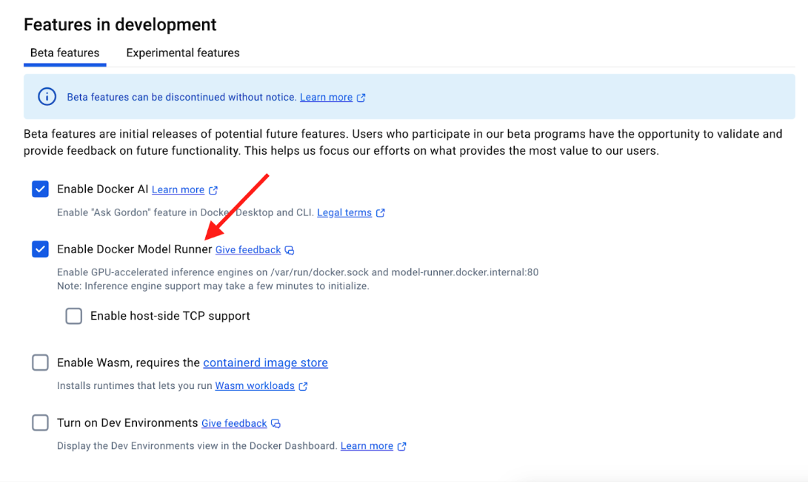

Getting Started
Prereq
- Install the latest version of Docker Desktop 4.40+
- Ensure that “Docker Model Runner” is enabled (it should by default in 4.40)
There are two ways to enable Model Runner - either using CLI or using Docker Dashboard.
Using CLI
docker desktop enable model-runner
Using Docker Dashboard

The "Enable host-side TCP support" feature allows Docker Model Runner to additionally accept connections on the host OS on the specified TCP port (default: 12434) rather than only through the host Docker socket (/var/run/docker.sock). You can change this to another port if needed, particularly if 12434 is already in use by another application. We will see its usage later in the docs.
Once you enable the option, select “Apply & Restart”.
If you’re not seeing the “Enable Model Runner” option, it is recommended to enable “Use nightly builds” option under Software Updates and try to see if the option is available. If still facing issue, reach out to Eva.
Open up the terminal and you should be able to see docker model as the new CLI.
docker model --help
Usage: docker model COMMAND
Docker Model Runner
Commands:
inspect Display detailed information on one model
list List the available models that can be run with the Docker Model Runner
pull Download a model
rm Remove a model downloaded from Docker Hub
run Run a model with the Docker Model Runner
status Check if the Docker Model Runner is running
version Show the Docker Model Runner version
Run 'docker model COMMAND --help' for more information on a command.
Check if the Model Runner is running or not
docker model status
Docker Model Runner is running
List the available models
docker model ls
MODEL PARAMETERS QUANTIZATION ARCHITECTURE FORMAT MODEL ID CREATED SIZE
The response shows an empty list. Let’s go ahead and download the model from the Docker Hub.
Download a model
docker model pull ai/llama3.2:1B-Q8_0
All these models are hosted on https://hub.docker.com/u/ai:
ai/gemma3
ai/llama3.2
ai/qwq
ai/mistral-nemo
ai/mistral
ai/phi4
ai/qwen2.5
ai/deepseek-r1-distill-llama (distill means it’s not the actual RL-ed deepseek, it’s a llama trained on DeepSeek-R1 inputs/outputs)
More models will be coming in the future, we plan to add more popular ones first.
List the Model
docker model ls
MODEL PARAMETERS QUANTIZATION ARCHITECTURE MODEL ID CREATED SIZE
ai/llama3.2:1B-Q8_0 1.24 B Q8_0 llama a15c3117eeeb 20 hours ago 1.22 GiB
Use docker model run to send a single message
docker model run ai/llama3.2:1B-Q8_0 "Hi"
Hello! How can I help you today?
Run the Model in interactive mode
docker model run ai/llama3.2:1B-Q8_0
Interactive chat mode started. Type '/bye' to exit.
> why is water blue?
Water appears blue because ...
Remove the model
docker model rm ai/llama3.2:1B-Q8_0